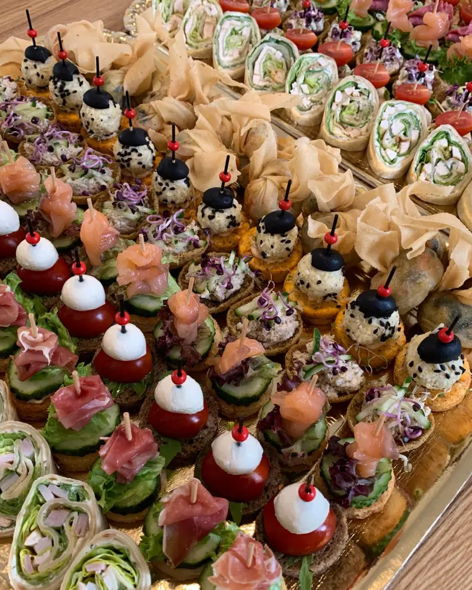
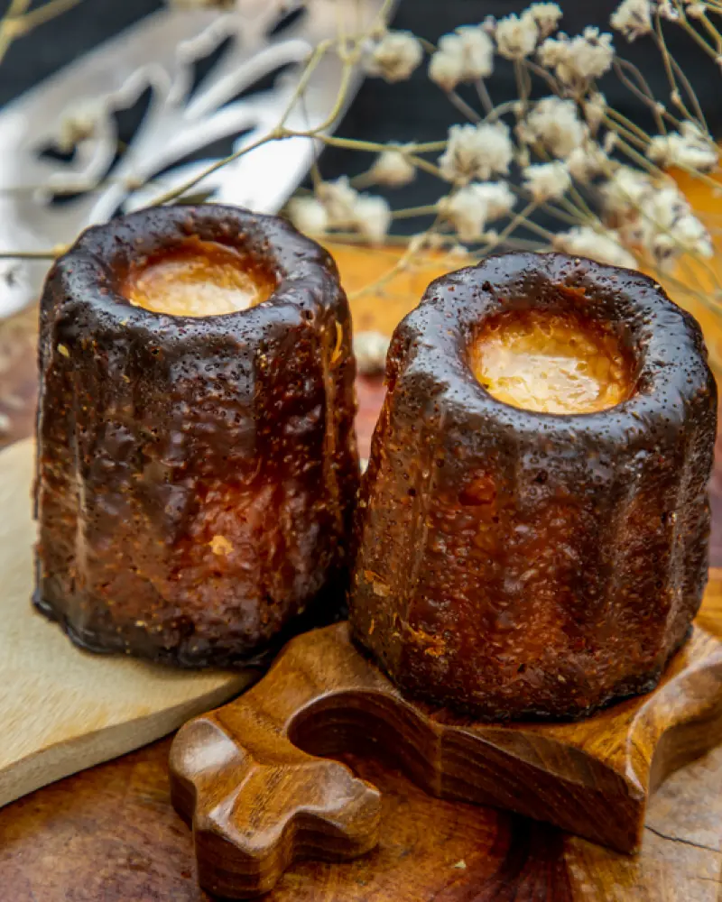

Kasdienai ir jūsų šventėms
Maži kąsneliai.
Didelis džiaugsmas.
Pietūs jūsų dienai. Užkandžiai jūsų žmonėms. Desertai tam saldžiam „dar truputį“.
R. Kalantos g. 48 · Kaunas

Skirta
dalintis ✦
dalintis ✦
Jūs kviečiate. Mes vaišiname.
Dienos pietūs✳Užkandžiai✳Desertai

Dar vieną?Mes irgi taip manom.
Iš mūsų virtuvėlės
Gera susėsti.
Dar geriau vaišintis.
Šeimos šventė, susitikimas su draugais ar vaišės kolegoms - pasirūpinsime skaniu stalu. Ruošiame vieno kąsnio užkandžius, mini burgerius, kaneles ir desertus.
O kasdien kviečiame pietų į Petrašiūnus. Šiandienos pasiūlymą rasite paspaudę „Dienos pietūs“.
Išsirinkti vaišes ↗Pagaminta dalintis